也紀念我們永遠的朋友 李士傑先生（Shih-Chieh Ilya Li）。
用 PDF Creator 把網頁變成電子書！
先前曾經介紹過，透過 PDF Creator 很輕易就能把自己的文件轉換成 PDF 檔，假設我們現在想把網頁上的資料轉換成 PDF 檔，方便離線時參考呢？（註：做這種事的時候，請注意智慧財產權的相關規定，切勿觸法！）當然還是可以利用列印的方法，把整個網頁都轉換成 PDF，只是這個方法連帶也會把無關的內容也一併轉換，必須利用列印的技巧，才有辦法只把自己需要的部份加以轉換出來。
萬一所需的資料，並非只在一處，而是在好幾個網頁呢？例如想要去考試院下載歷屆高考各科目有關選擇題的答案，我們會發現無法把十年的答案一次轉成一個檔案，只能一年的答案轉成一個，如此，將會讓答案檔案太多，管理和參考都不方便。
這些問題雖小，但東西多了還是讓人覺得挺煩的。所以在此要和大家分享 PDF Creator 的一些功能，看看這些「小麻煩」如何輕鬆解決！
在2010年元月4日，PDF Creator 終於推出 0.9.9 的版本，解決了先前版本在網頁轉檔上的二大問題：一是版面經常不準確；二是分頁時「偶而」會把文字切半分在兩頁的情形。所以在這個版本出現後，才是值得分享上述問體解決方法的時機囉！
PDF Creator 的基本資料：
軟體名稱：PDFCreator
檔案大小：17.8 MB
官方網站：https://www.pdfforge.org/
下載網址：SourceForge.net PDFCreator
適用軟體平台：Windows（XP、Vista 和 Windows 7）
授權：GNU General Public License (GPL)
◎ 選擇繁體中文的問題和解決之道
雖然說這個版本已經解決了一些問題，不過在繁體中文介面方面卻出現了問題，首先就是在某些安裝步驟會出現亂碼：
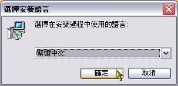
圖 1：安裝時，會自動偵測作業系統的語系而建議安裝所用的語言。
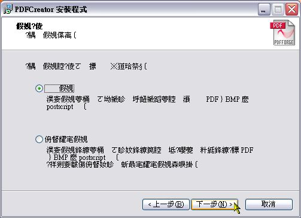
圖 2：到選擇單機或伺服器的安裝選項時，卻出現了亂碼。但之後的步驟有些會正常，有些還是不正常，甚至有部份正常，部份不正常的現象。
因此，安裝時建議大家選擇英文，對於從小就唸過英文的我們，應該能順利安裝才是。
另外，安裝過程中有個步驟要注意，就是選擇安裝元件的時候。在這個步驟可以選擇想用的語系，筆者剛看到的時候很開心的勾選了 Chinese Traditional，不料事情並沒有想像的那般美好！詳情和解決之道，請看下列的圖片和說明：
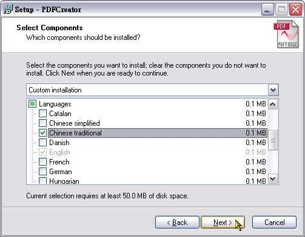
圖 3：選擇元件這個步驟內，可選擇 Chinese traditional（繁體中文）。
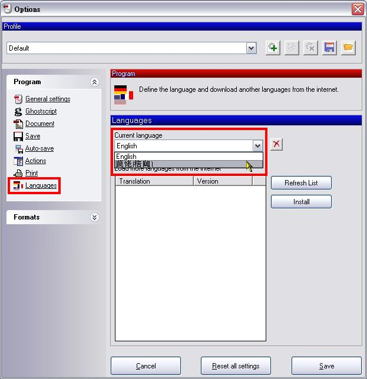
圖 4：安裝完成後，進入選項的設定，要選擇繁體中文時才發現選項本身就出現亂碼！
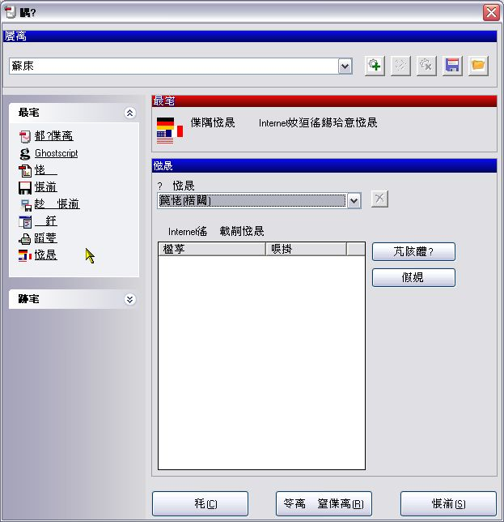
圖 5：選擇繁體中文後，介面的文字全變成亂碼。
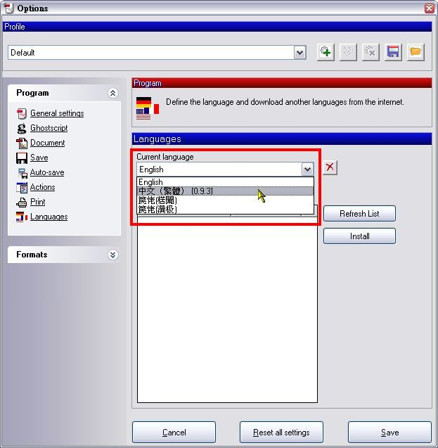
圖 6：所幸，套用 0.9.3 版的繁體中文語系檔後，出現正常的繁體中文選項。
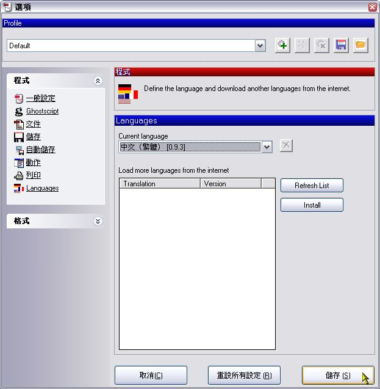
圖 7：套用 0.9.3 版的繁體中文語系檔後，所有介面文字都是正常的。
至於要怎麼套用 0.9.3 的語系檔，請參考拙著：「將文件轉成 PDF 的好幫手－PDFCreator」一文。
◎ 開始轉檔前的一些重要設定
好了！解決介面語系問題之後，應該可以開始來轉檔了吧？別急，在此之前，還有一些設定最好先加以修改，以便於日後的轉檔工作。首先是有關於 pdfforge Toolbar。
這個玩意是安裝在瀏覽器上的工具列，可以說是對於把網頁轉成文字檔的主要工具列，可是它本身有兩個我認為不方便的地方，第一是多了合作廠商的網址按鈕，偏偏這些廠商的網路服務不是我愛用的（當然，這因人而異，如果剛好是大家常用的，關於這部分的設定就可以免了）；第二是它會順帶安裝指定特定搜尋引擎的元件，讓瀏覽器無法使用原先自己設定好的搜尋引擎。除非它預設的搜尋引擎剛好是我們自己想用的，否則不把這個元件停用，就無法設定回自己常用的搜尋引擎。
另外，在 Firefox 瀏覽器內，預設是不會把網頁的背景，如顏色和圖片等列印出來，如果這部分大家覺得重要，也可以加以修改。以下就是針對這三個問題的設定：
步驟一：
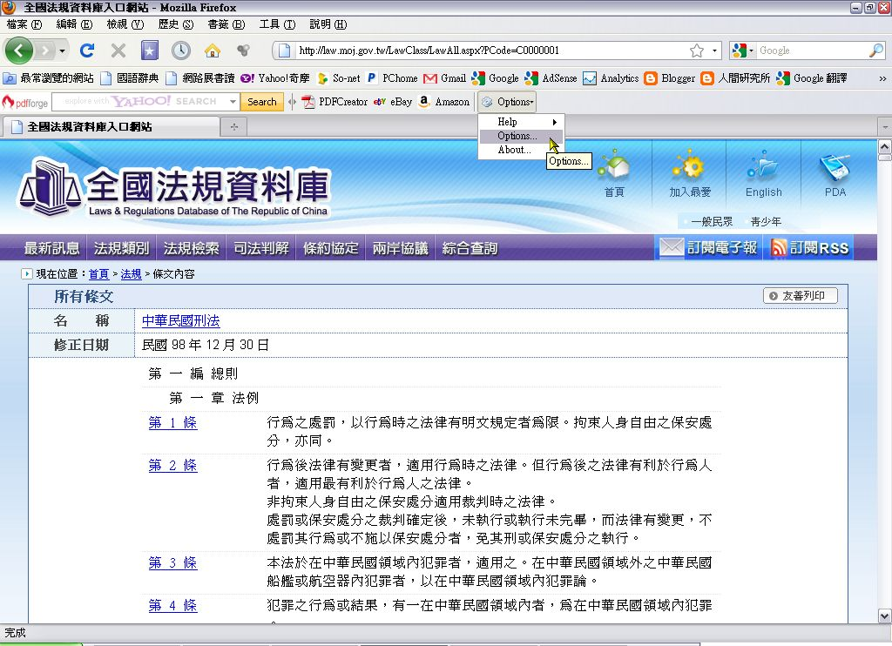
按一下 pdfforge Toolbar 上的「Options」的鈕，點選「Options」。
步驟二：
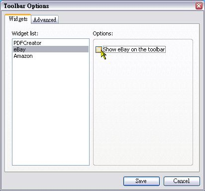
在「Widgets」標籤內，左邊欄位會看到 eBay 和 Amazon 的選項，點選 eBay，右邊的欄位內就會出現「Show eBay on the toolbar」的選項，將它取消勾選。
步驟三：
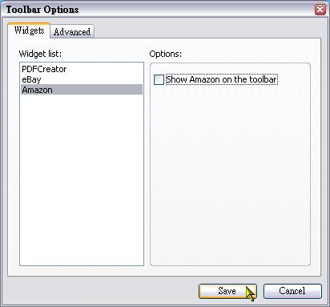
接著點選 Amazon，用前一步驟的方法取消勾選，然後按一下「Save」。之後在工具列上就不會出現這兩個鈕，這樣子工具列顯的比較清爽，也比較不會有誤按的情形出現。
［補充說明］
有關 pdfforge Toolbar 的設定，只要在某個瀏覽器設定，不必每個瀏覽器都分別設定。例如在 Firefox 上取消 eBay 和 Amazon 按鈕的設定，在 Internet Explorer 內的 pdfforge Toolbar 也會被取消。
步驟四：
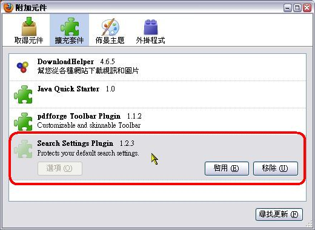
在 Firefox 的功能表上，按一下「工具」->「附加元件」，在這裡點選「Search Settings Plugin」，然後點選「停用」鈕，原「停用」鈕就會變成如圖的「啟用」鈕。之後在Firefox內就可以自行設定預設的搜尋引擎了。
步驟五：
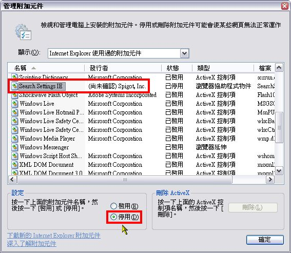
在 Internet Explorer 的工具列上，按「工具」->「網際網路選項」，切換到「程式集」標籤，點選「管理附加元件」按鈕，找到「Search Setting IE」並點選起來，接著點選左下方「設定」欄位內的「停用」，最後按「確定」，之後在 Internet Explorer 內就能自由設定搜尋引擎。
步驟六：
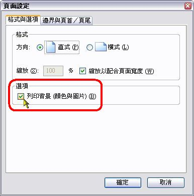
接著是 Firefox 的頁設定。點選 Firefox 工具列的「檔案」->「頁面設定」，在「格式與選項」的標籤下，勾選「列印背景（顏色與圖片）」後按「確定」。之後不論是透過印表機還是PDF Creator，都會把背景的顏色和圖片都列印出來。這樣做的好處是比較能保留網頁的整體外觀，如果該網頁的版面設計具有相當的美感，對於閱讀來說，當然會比較舒服。（不過不是所有的網頁都有這方面的優點，大家轉檔前請先自行評估）
◎ 網頁轉 PDF 的基本功
pdfforge Toolbar 可以說是為了方便將網頁內容轉成 PDF 所設計的，畢竟採用列印的方式所需的步驟比較多（使用快速鍵 Ctrl + P 只減少一個步驟，省的不夠多），有了這個工具列，只要按一個鈕就可以把正在檢視的網頁內容，一口氣轉換成 PDF 檔。因此經常在網頁上找參考資料並有需要抓下以備參考者，不妨順帶安裝這個工具列，所省的時間雖然不多，但長久累積下來也是很可觀的。
步驟一：
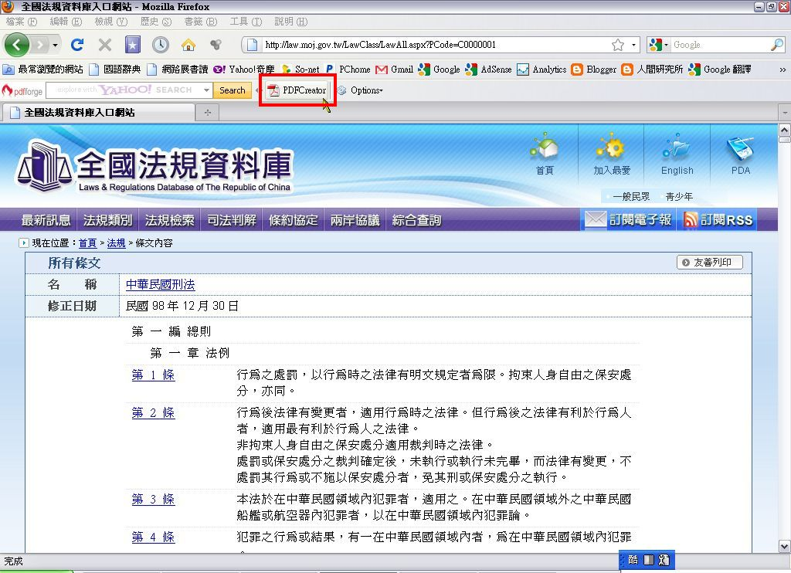
找到要轉 PDF 檔的網頁內容後，按一下 pdfforge Toolbar 上的「PDF Creator」鈕。
步驟二：
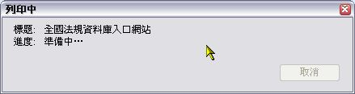
按下之後，會出現列印中的視窗，顯示相關進度。
步驟三：
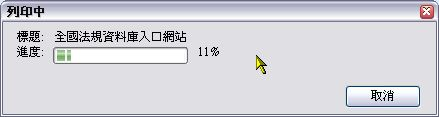
接著是顯示網頁內容載入的進度。
步驟四：
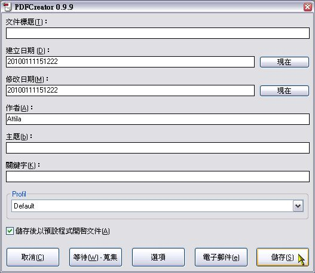
載入完畢就完成轉檔的準備，接著會開啟輸入基本資料的視窗。如有需要可在各個欄位內輸入資料，完成後按一下「儲存」。比較可惜的是，在這個版本，「文件標題」欄位內依舊不能輸入中文。
步驟五：
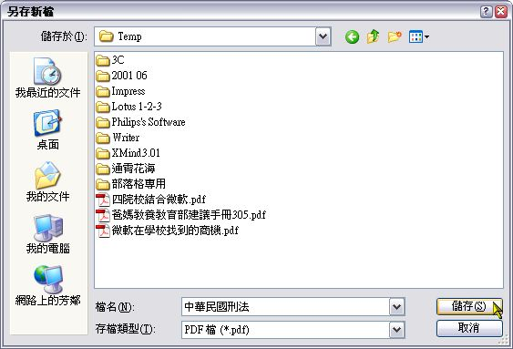
隨即出現「另存新檔」視窗，選定資料夾，輸入檔案名稱後，按「儲存」鈕。
步驟六：
出現這個動畫時，就是正在進行轉檔。轉檔所需的時間，視網頁內容多寡而定，通常頁數多、圖片多（包括背景的圖片），需要的時間就長。（除非檔案真的很大，否則硬體運算效能不大會讓人覺得有何影響）
步驟七：
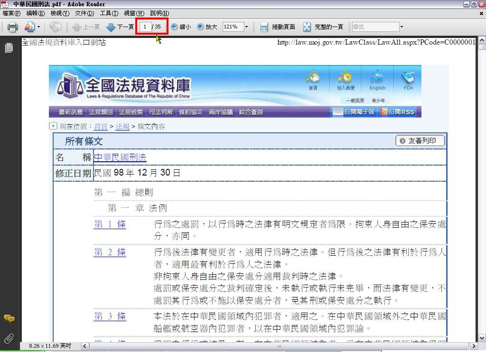
轉檔後檢視一下，基本上和原本的網頁略有差異，如兩邊的空白區域較小。不過大致上和原本的網頁編排相同。
通常，只要網頁符合 W3C 標準，轉出來的檔案，版面上大概都不會有嚴重的「變形」，少部分的網頁還是會有些微的不一樣。相較於之前的版本，這個版本的轉檔結果算是讓人可接受。
◎ 將所需內容轉為 PDF
前面的做法是不管三七廿一，把網頁的內容全部轉成 PDF 檔，若我們轉出來的檔案不想要有網頁開頭那些 LOGO 的圖案和文字呢？這有兩個做法可以解決。一是利用網頁的「友善列印」鈕。目前很多和內容有關的網站，都會提供這樣的功能，這個功能通常會出現另一個專為列印所設計的網頁，不會有網頁開頭那些無關緊要的東西，版面也是針對一般印表機預設的紙張大小（一般為 A4）來設計，因此所轉出來的 PDF 檔，通常不會有版面錯置的問題。
另一個解決方法，就是自行選取，然後在列印視窗內，點選「選擇範圍」的項目來列印即可。（註：不同的軟體關於這一項的名稱略有差異，如「選擇」、「選取範圍」等，看到時請自行隨機應變）這個方法最需要注意的是選取的技巧，尤其是在內容很多的網頁內，底下所示範的做法，就是利用選取技巧和「友善列印」的方式達成的。
步驟一：
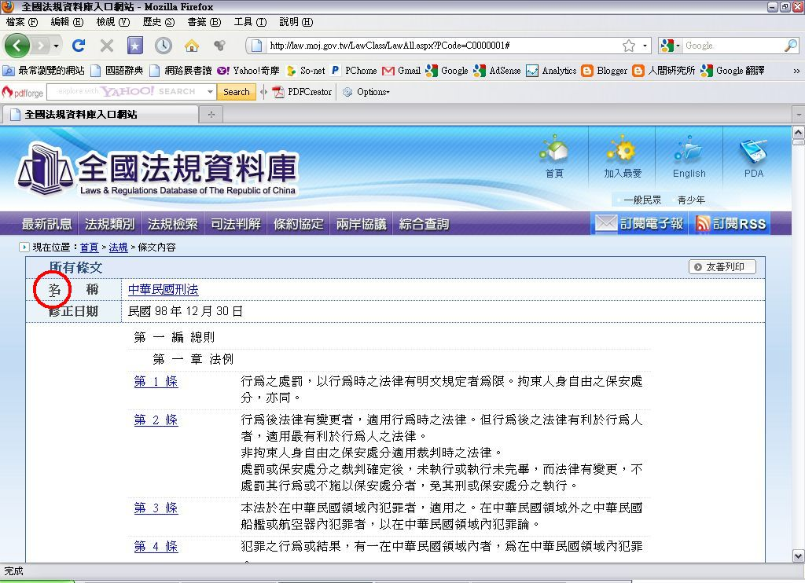
把游標移到想要的內容最前頭（也就是將滑鼠移到內容的起始處按一下）。
步驟二：
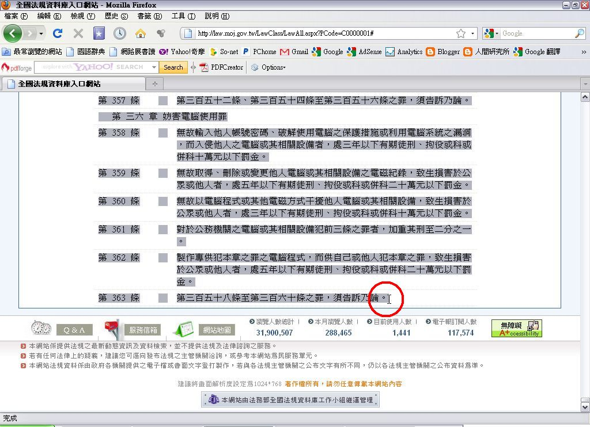
向下捲頁，直到所要的內容結尾處能顯示出來，然後按住鍵盤的 Ctrl 鍵，在內容結尾處按一下滑鼠，就能把想要的內容一次全部選取起來。
步驟三：
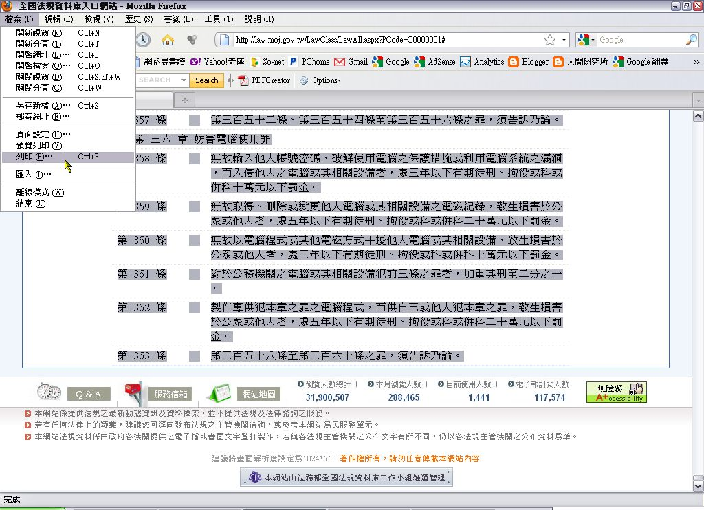
此時不可再用 pdfforge Toolbar 上的「PDFCreator」的按鈕，否則轉出來的還是全部的網頁內容。這裡該用的是瀏覽器的列印功能。所以要按一下功能表的「檔案」->「列印」。（當然，也可使用快速鍵 Ctrl + P）
步驟四：
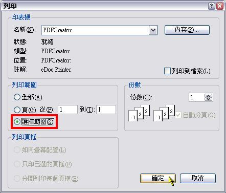
在「列印範圍」內點選「選擇範圍」，按「確定」後就會開始進行轉檔程序。如此轉出來的 PDF 檔就只有所選取的部分。
步驟五：
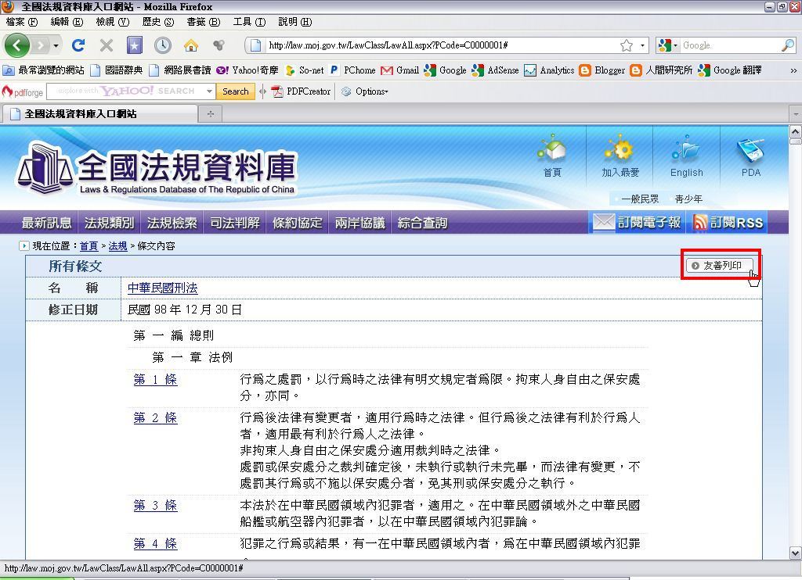
如果網頁本身提供「友善列印」功能的按鈕，可直接加以利用。
步驟六：
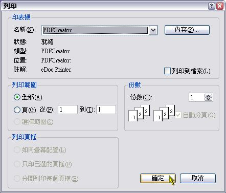
部分網頁的「友善列印」會直接啟動瀏覽器的列印功能，有些則是另外顯示出為列印而設計的網頁（後面的例子即是如此）。如果是前一種情形，則直接採用列印的方式來轉 PDF 檔即可（本例即是如此）；如是後一種情形，則切換到新網頁的分頁或視窗後，按 pdfforge Toolbar 上的「PDFCreator」的按鈕即可。
步驟七：
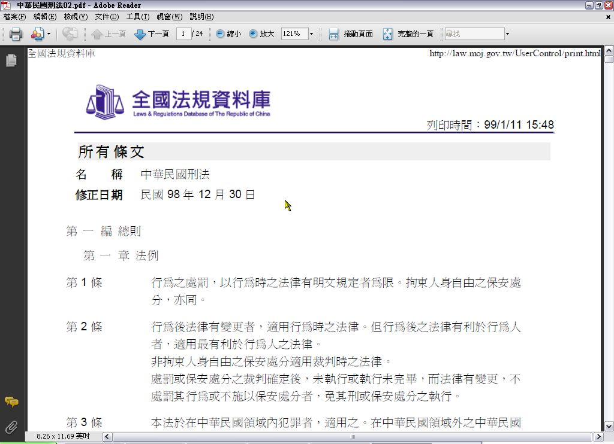
以「友善列印」所轉出來的檔案，在內容方面就只會有我們所想要的部分；在版面方面，與網頁直接轉檔的比起來也不大一樣，通常會比較利於閱讀。
步驟八：
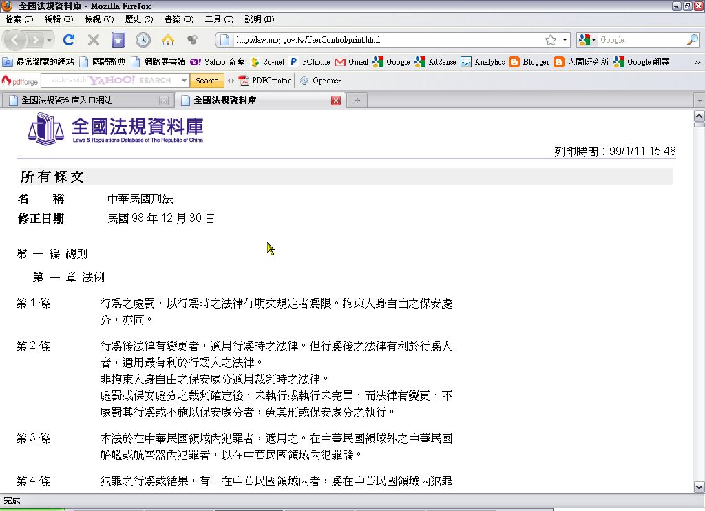
把轉好的 PDF 檔和「友善列印」所顯示的網頁加以比較，有時會發現版面似乎有點不同，尤其是空白的部分會比較少。這樣的差別是因為網頁的顯示會針對螢幕大小的緣故。
◎ 合併輸出成單一 PDF 檔
所需的資料如能在同一網頁顯示固然是最好，不過所需要的相關內容，往往不一定會放在一起。以上述例子中的法規條文來說，如果想把和行政有關的法規全部轉成一個檔案（基本的如行政程序法、行政執行法、行政罰法、訴願法、行政訴訟法等），就該網站的功能來說，是無法讓相關的法規都出現在同一網頁的，只能分別檢索出個別的法規，然後一個個轉檔。
如此的做法對於日後自己檢索相關法條時，當然很不方便，解決方法之一是自行抓取內容重新編輯。然而法條內容少則數十條，多則近千，自行編輯會耗費太多時間。所以轉檔時就能馬上合併在同一個檔案，當然是比較省時省力的做法。
PDF Creator 本身就提供合併輸出的功能，要解決這樣的問題一點都不難。底下所要介紹者，即是如何把數個不同網頁的內容合併輸出的方法，所用的例子是本文開頭所講的「把歷年的考古題解答合併為一」，示範的網站是考選部的測驗答案區。
步驟一：
找出所需的解答，按一下「友善列印」，此時會開啟另一個專門用來列印的網頁。此處之所以不直接使用 pdfforge Toolbar 的「PDFCreator」按鈕功能，是因為「友善列印」的網頁，文字設定的比較大，輸出的結果看起來比較舒服。（這樣比較不會看錯答案啊！）
步驟二：
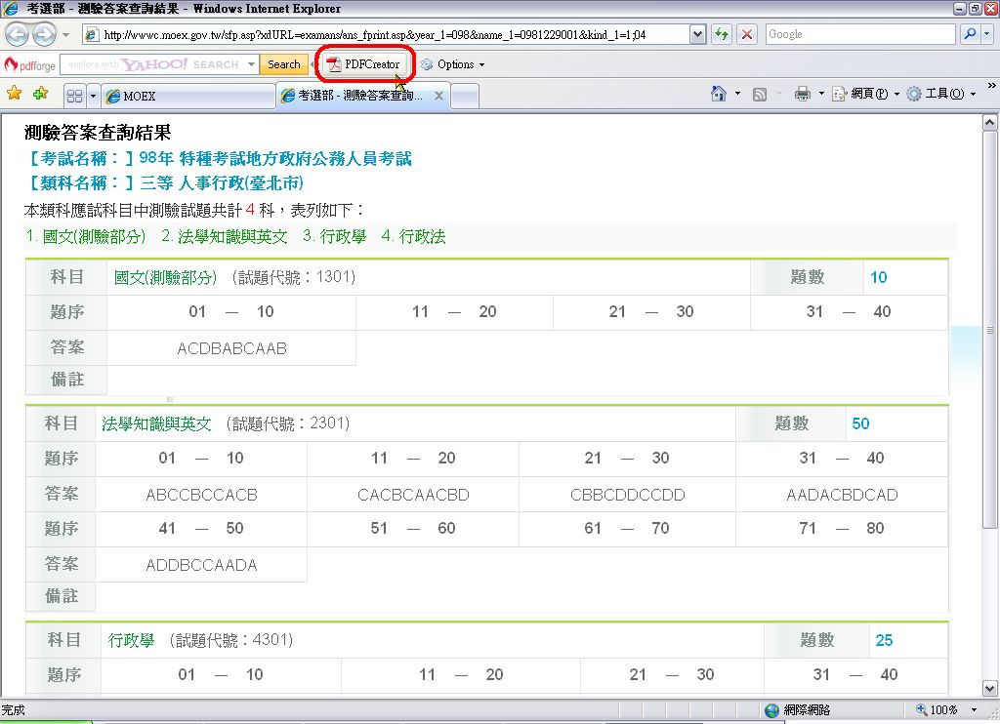
切換到列印版本的網頁後，按 pdfforge Toolbar 的「PDFCreator」按鈕。
步驟三：
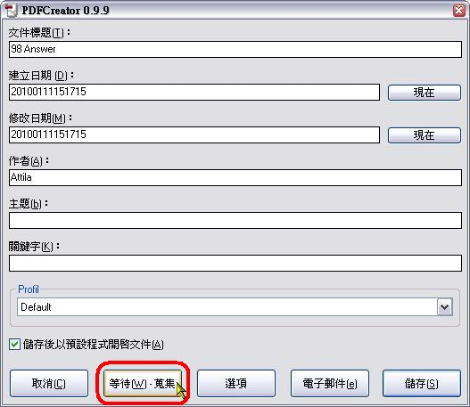
在出現的視窗中，按「等待[W]-蒐集」鈕。
步驟四：
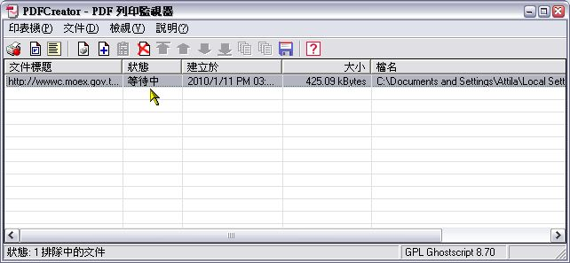
此時會自動開啟 PDFCreator 的主視窗，裡面會顯示剛剛的網頁內容已經準備就緒，等著被列印出來。
步驟五：
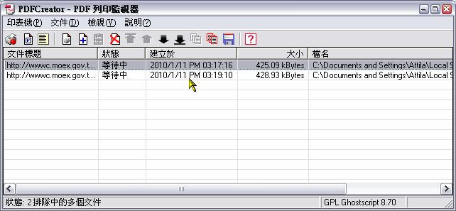
此時切換到瀏覽器視窗，把其他年度的答案找出來，重複前面的步驟一和二，讓所需的檔案都進來排隊等待列印。（只要使用過「等待[W]-蒐集」功能後，之後的檔案都會以相同的等待模式進來排隊）
步驟六：
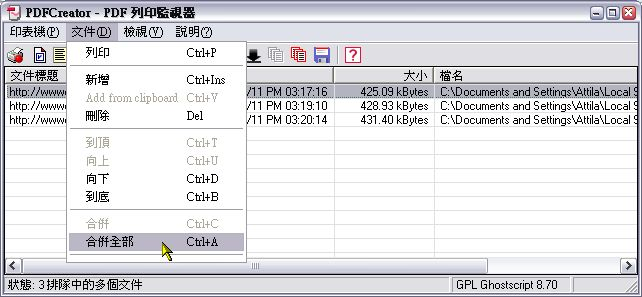
所需的檔案全部排進來後，在 PDFCreator 的主視窗內，按一下功能表的「文件」->「合併全部」。
［補充說明］
如果要調整檔案的順序，在進行合併之前，可以在 PDFCreator 的主視窗內，點選要調整的檔案，然後在標準工具列上選擇「到頂」、「向上」、「向下」、「到底」等按鈕，好調整它們的順序。調整檔案的順序，當然也等同於改變相關內容在合併後檔案內的順序。
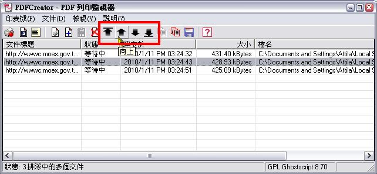
步驟七：
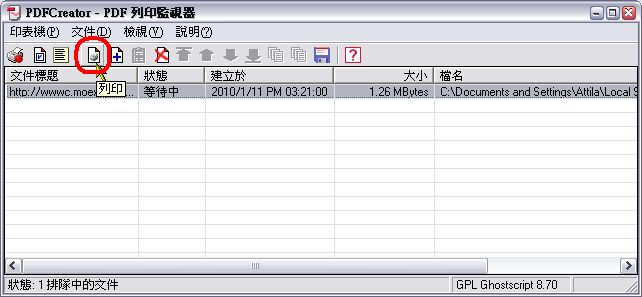
此時所有的檔案就會被合併成一個。按一下標準工具列上的「列印」鈕，好將這個檔案轉成 PDF 檔。
步驟八：
這時，輸入基本資料的視窗又會出現，這次是真的要轉檔了，所以要按「儲存」鈕。
步驟九：
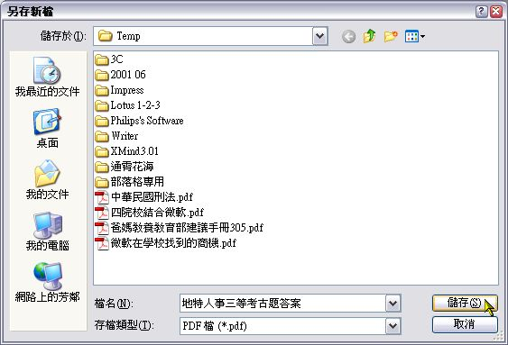
選定資料夾、輸入檔案名稱後，按「儲存」。
步驟十：
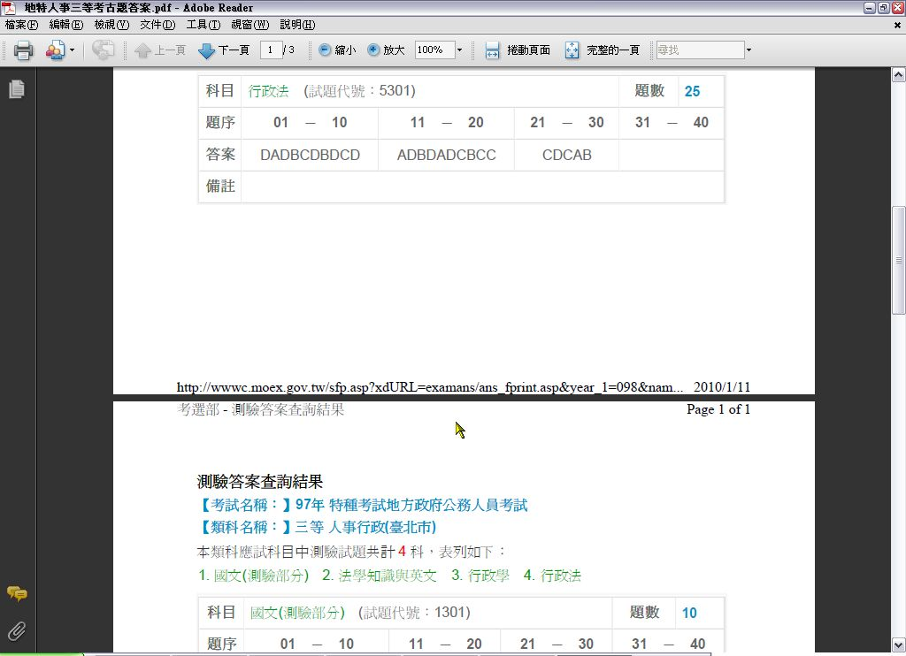
相關的檔案全部合併成一個，這樣子要比對答案就不需要打開一個個的檔案，是不是方便多了？
最後有一點要注意的是，如果在進行合併輸出檔案前就先自行開啟 PDFCreator 的主視窗，合併列印之後，PDFCreator 仍舊會處於停止列印的狀態，為了避免下次轉檔時，誤以為 PDFCreator 失去作用，記得要取消停止列印的功能，做法如下圖及其圖說：
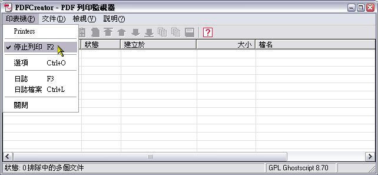
圖 7：在 PDFCreator 的主視窗內，按一下功能表的「印表機」，取消勾選「停止列印」即可取消停止列印的設定。
OSSF Newsletter : 第 144 期 2010 年 2 月的近期瀏覽器 JS 測試比較
Tags: PDF Creator, Attila, PDF, 電子書, GPL,
Category: FOSS Programs
Address：No.128, Sec.2, Academia Rd., Institute of Information Science, Academia Sinica, Nangang District, Taipei City 11529, Taiwan (R.O.C).
Privacy Policy. Terms-of-use

Comments
sourceforge.net/.../download